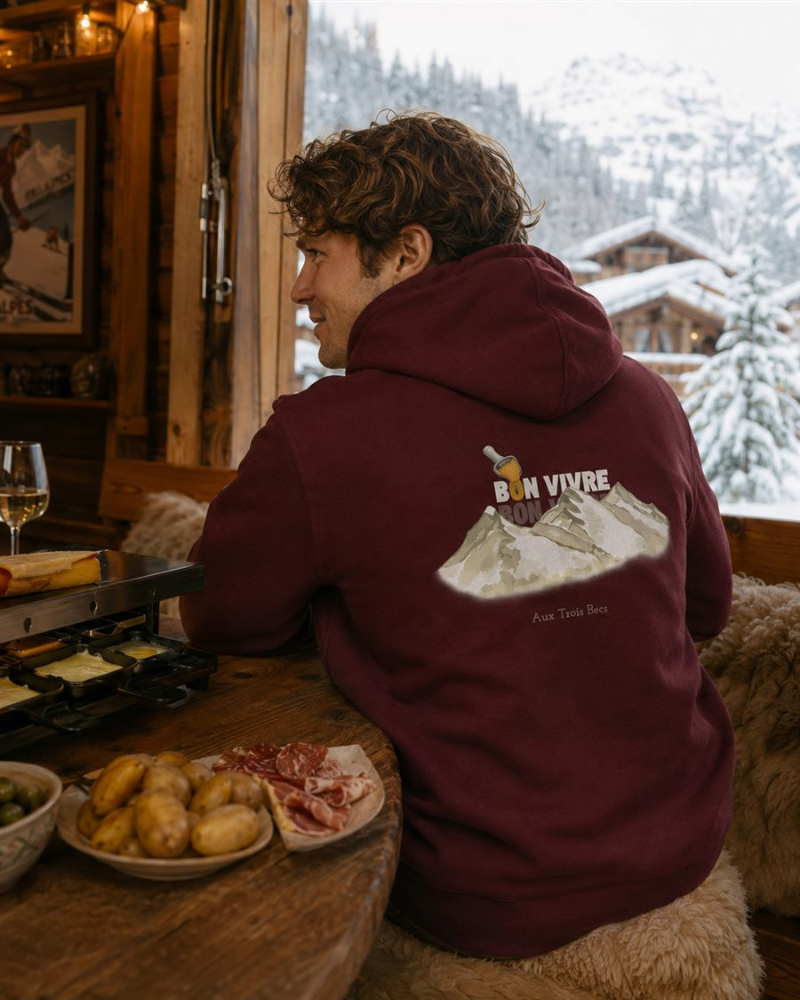

Marque de vêtements bon vivant
Bon Vivre.
La vie est belle
Une marque locale pensée pour les amoureux des bons moments. Née entre la Drôme et l'Ardèche, elle célèbre les voyages, la convivialité, les apéros entre copains, les barbecues d'été et les raclettes d'hiver. Une marque simple, joyeuse et sans prétention — juste pour le plaisir de partager.
Pourquoi Bon Vivre ?
Ici, pas de grand discours marketing. La marque Bon Vivre tient sur trois idées simples : des matières responsables, un ancrage bien réel en Drôme-Ardèche, et une bonne dose de convivialité glissée dans chaque pièce. Rien de plus, rien de moins — juste l'envie de bien s'habiller pour les bons moments de la vie.
Coton biologique
Tous nos vêtements sont fabriqués avec des matières responsables, à commencer par le coton biologique. Une manière simple de prendre soin de la planète, sans jamais sacrifier le confort ni le style de nos pièces, ni le plaisir de les porter au quotidien.
Née en Drôme-Ardèche
La marque Bon Vivre a vu le jour entre la Drôme et l'Ardèche, au cœur de la vallée du Rhône. Un ancrage local qui se ressent dans chaque détail, du choix des couleurs aux petits clins d'œil à la région et à ses paysages.
Pensée pour les bons moments
Apéros entre copains, barbecues d'été, raclettes d'hiver : chaque vêtement Bon Vivre est pensé pour accompagner les instants de convivialité, sans jamais se prendre au sérieux ni sortir le grand jeu. Juste être bien, ensemble.
Nos pièces les plus bon vivant
Envie d'un vêtement Bon Vivre original à porter au prochain apéro, au bord de la piscine ou sur les hauteurs d'un col ardéchois ? Voici trois pièces qui résument bien notre esprit, à retrouver aussi sur la boutique Bon Vivre en ligne, avec le reste de la collection : des t-shirts en coton biologique et un sweat léger pour les soirées plus fraîches.


Ermitage
35 €
Un t-shirt en coton biologique, avec la tagline imprimée « Ici, le vin se boit entre copains ! » — un clin d'œil à l'Hermitage et à ses vignes qui dominent la vallée du Rhône. Amour et Bon Vivre se retrouvent dans le même esprit : simple, chaleureux, sans chichis.

Amour
35 €
Un t-shirt en coton biologique avec la tagline « Bon Vivre. simplement. » imprimée dessus. Amour et Bon Vivre, deux mots qui résument bien ce qu'on aime : les bons moments partagés sans complication.

Trois Becs
50 €
Un sweat léger, taillé pour les soirées qui rafraîchissent, avec la tagline « En montagne, on ne compte pas les parts de raclette ! ». Idéal pour les weekends au sommet des Trois Becs comme pour un apéro entre copains.
Un peu de nous
Bon Vivre est née entre la Drôme et l'Ardèche, dans cette vallée du Rhône où les vignes de l'Hermitage regardent le fleuve couler. C'est ici, entre deux rives, que la marque a pris racine : une envie simple de vêtements qui parlent de convivialité, de voyages et de moments partagés plutôt que de tendances passagères.
Pas d'esbroufe ni de grand discours : juste des pièces confortables, en coton biologique, pensées pour accompagner les apéros entre copains, les barbecues d'été et les raclettes d'hiver. Une marque locale, à taille humaine, qui préfère un bon verre de vin partagé à un plan marketing bien ficelé.
Chaque t-shirt, chaque sweat porte un peu de cette vallée du Rhône : ses vignes, ses collines et cette manière bien particulière de prendre le temps de vivre. On aime autant parler voyages que raclette, et c'est exactement ce qu'on met dans nos vêtements.
Pour nos bons vivants
Retrouvez toute la collection sur notre boutique en ligne, et habillez vos apéros, vos barbecues d'été et vos raclettes d'hiver avec des pièces simples, chaleureuses, fabriquées avec des matières responsables. La vie est belle, autant en profiter en bonne compagnie et un bon verre à la main — c'est tout l'esprit de la marque Bon Vivre.
Voir la boutique